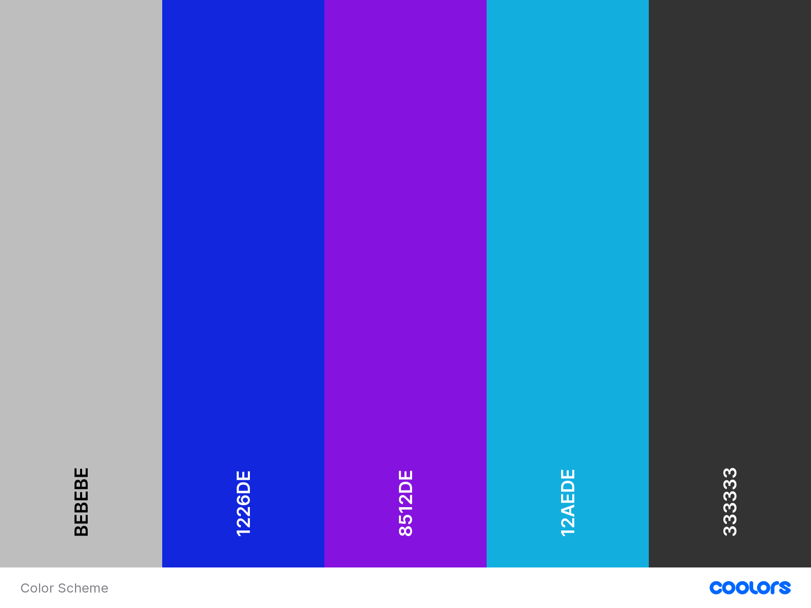
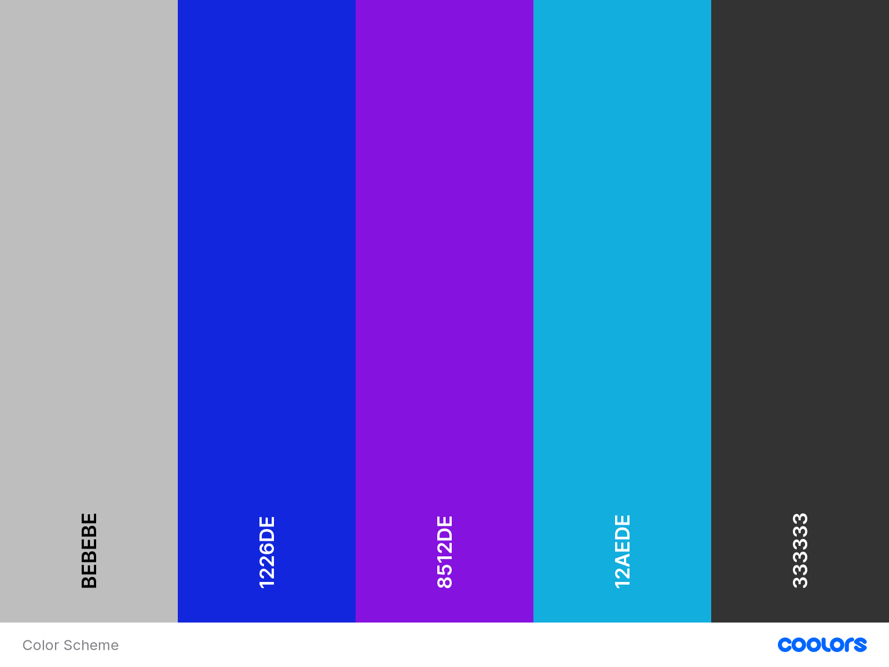

Color Scheme
The colors I will use for this website are analogous to one another with exception of the two neutral tones (light and dark grey).
The colors I will use for this website are analogous to one another with exception of the two neutral tones (light and dark grey).
